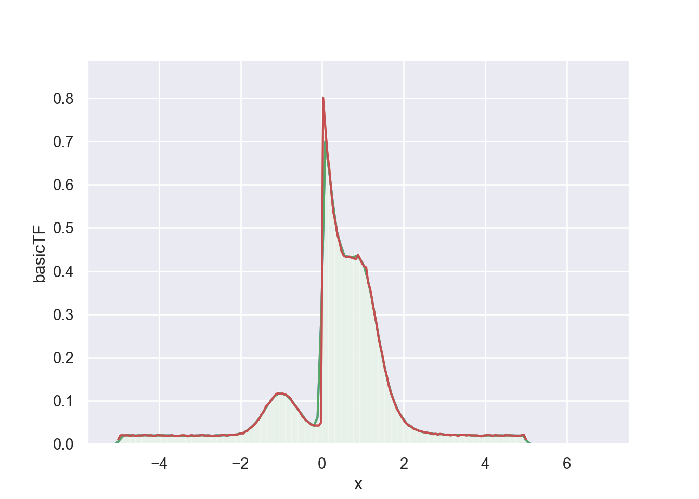

4 Comparison
To compare the different implementations I created a simple test distribution comprised of three gaussian, one uniform and one exponential distribution. The distribution is created by using the TensorFlow Probability package and its Mixture Model.
4.1 Generation of Test Distribution
Listing: Test Distribution generation
import numpy as np
import tensorflow as tf
import tensorflow_probability as tfp
r_seed = 1978239485
n_datapoints = 1000000
tfd = tfp.distributions
mix_3gauss_1exp_1uni = tfd.Mixture(
cat=tfd.Categorical(probs=[0.1, 0.2, 0.1, 0.4, 0.2]),
components=[
tfd.Normal(loc=-1., scale=0.4),
tfd.Normal(loc=+1., scale=0.5),
tfd.Normal(loc=+1., scale=0.3),
tfd.Exponential(rate=2),
tfd.Uniform(low=-5, high=5)
])
data = mix_3gauss_1exp_1uni.sample(sample_shape=n_datapoints, seed=r_seed)
# Why is this needed???
data = tf.cast(data, tf.float64).numpy()## [Text(0, 0.5, 'Probabililty of occurring'), Text(0.5, 0, 'Some event wiht value x')]
import pandas as pd
n_testpoints = 200
def kde_basic(data, x):
fac = 1.0 / np.sqrt(2.0 * np.pi)
exp_fac = -1.0/2.0
h = 0.01
y_fac = 1.0/(h*data.size)
gauss_kernel = lambda x: fac * np.exp(exp_fac * x**2)
y = np.zeros(x.size)
for i, x_i in enumerate(x):
y[i] = y_fac * np.sum(gauss_kernel((x_i-data)/h))
return y
def kde_seaborn(data, x):
sns.distplot(data, bins=1000, kde=True, rug=False)
return np.NaN
@tf.function(autograph=False)
def kde_basic_tf_internal(data, x, n_datapoints):
# TODO: Use tf-kde package here
h1 = 0.01
fac = tf.constant(1.0 / np.sqrt(2.0 * np.pi), tf.float64)
exp_fac = tf.constant(-1.0/2.0, tf.float64)
y_fac = tf.constant(1.0/(h1 * n_datapoints), tf.float64)
h = tf.constant(h1, tf.float64)
gauss_kernel = lambda x: tf.math.multiply(fac, tf.math.exp(tf.math.multiply(exp_fac, tf.math.square(x))))
calc_value = lambda x: tf.math.multiply(y_fac, tf.math.reduce_sum(gauss_kernel(tf.math.divide(tf.math.subtract(x, data), h))))
return tf.map_fn(calc_value, x)
def kde_basic_tf(data, x):
n_datapoints = data.size
return kde_basic_tf_internal(data, x, n_datapoints).numpy()
methods = pd.DataFrame({
'identifier': [
'basic',
'seaborn',
'basicTF'
],
'label': [
'Basic KDE with Python',
'Using seaborn.distplot',
'Basic KDE in TensorFlow'
],
'function':[
kde_basic,
kde_seaborn,
kde_basic_tf
]
})
methods.set_index('identifier', drop=False, inplace=True)
estimations = pd.DataFrame()
estimations['x'] = np.linspace(-5.0, 5.0, num=n_testpoints, dtype=np.float64)
methods['runtime'] = np.NaN
for index, method in methods.iterrows():
with Timer('Benchmarking') as timer:
estimations[method['identifier']] = method['function'](data, estimations['x'])
timer.stop()
print(methods.loc[method['identifier']])
methods.at[method['identifier'], 'runtime'] = timer.elapsedRunning this, leads to the following comparison:
| identifier | label | runtime | |
|---|---|---|---|
| basic | basic | Basic KDE with Python | 7.243051 |
| seaborn | seaborn | Using seaborn.distplot | 2.875691 |
| basicTF | basicTF | Basic KDE in TensorFlow | 2.531482 |
| x | basic | seaborn | basicTF |
|---|---|---|---|
| -5.0000000 | 0.0108500 | NaN | 0.0108500 |
| -4.9497487 | 0.0202858 | NaN | 0.0202858 |
| -4.8994975 | 0.0207934 | NaN | 0.0207934 |
| -4.8492462 | 0.0201125 | NaN | 0.0201125 |
| -4.7989950 | 0.0207554 | NaN | 0.0207554 |
| -4.7487437 | 0.0204646 | NaN | 0.0204646 |
| -4.6984925 | 0.0189298 | NaN | 0.0189298 |
| -4.6482412 | 0.0213905 | NaN | 0.0213905 |
| -4.5979899 | 0.0191852 | NaN | 0.0191852 |
| -4.5477387 | 0.0197819 | NaN | 0.0197819 |
| -4.4974874 | 0.0202592 | NaN | 0.0202592 |
| -4.4472362 | 0.0199215 | NaN | 0.0199215 |
| -4.3969849 | 0.0204729 | NaN | 0.0204729 |
| -4.3467337 | 0.0212416 | NaN | 0.0212416 |
| -4.2964824 | 0.0202678 | NaN | 0.0202678 |
| -4.2462312 | 0.0200485 | NaN | 0.0200485 |
| -4.1959799 | 0.0206836 | NaN | 0.0206836 |
| -4.1457286 | 0.0190015 | NaN | 0.0190015 |
| -4.0954774 | 0.0191545 | NaN | 0.0191545 |
| -4.0452261 | 0.0210005 | NaN | 0.0210005 |
| -3.9949749 | 0.0204607 | NaN | 0.0204607 |
| -3.9447236 | 0.0201610 | NaN | 0.0201610 |
| -3.8944724 | 0.0202566 | NaN | 0.0202566 |
| -3.8442211 | 0.0197011 | NaN | 0.0197011 |
| -3.7939698 | 0.0197743 | NaN | 0.0197743 |
| -3.7437186 | 0.0193818 | NaN | 0.0193818 |
| -3.6934673 | 0.0209057 | NaN | 0.0209057 |
| -3.6432161 | 0.0195578 | NaN | 0.0195578 |
| -3.5929648 | 0.0193330 | NaN | 0.0193330 |
| -3.5427136 | 0.0187924 | NaN | 0.0187924 |
| -3.4924623 | 0.0195692 | NaN | 0.0195692 |
| -3.4422111 | 0.0205190 | NaN | 0.0205190 |
| -3.3919598 | 0.0205917 | NaN | 0.0205917 |
| -3.3417085 | 0.0196299 | NaN | 0.0196299 |
| -3.2914573 | 0.0181004 | NaN | 0.0181004 |
| -3.2412060 | 0.0200508 | NaN | 0.0200508 |
| -3.1909548 | 0.0210303 | NaN | 0.0210303 |
| -3.1407035 | 0.0189306 | NaN | 0.0189306 |
| -3.0904523 | 0.0200319 | NaN | 0.0200319 |
| -3.0402010 | 0.0198879 | NaN | 0.0198879 |
| -2.9899497 | 0.0202502 | NaN | 0.0202502 |
| -2.9396985 | 0.0210968 | NaN | 0.0210968 |
| -2.8894472 | 0.0201990 | NaN | 0.0201990 |
| -2.8391960 | 0.0198535 | NaN | 0.0198535 |
| -2.7889447 | 0.0201914 | NaN | 0.0201914 |
| -2.7386935 | 0.0194153 | NaN | 0.0194153 |
| -2.6884422 | 0.0186982 | NaN | 0.0186982 |
| -2.6381910 | 0.0200374 | NaN | 0.0200374 |
| -2.5879397 | 0.0197658 | NaN | 0.0197658 |
| -2.5376884 | 0.0193036 | NaN | 0.0193036 |
| -2.4874372 | 0.0205794 | NaN | 0.0205794 |
| -2.4371859 | 0.0213497 | NaN | 0.0213497 |
| -2.3869347 | 0.0207420 | NaN | 0.0207420 |
| -2.3366834 | 0.0196691 | NaN | 0.0196691 |
| -2.2864322 | 0.0214166 | NaN | 0.0214166 |
| -2.2361809 | 0.0208898 | NaN | 0.0208898 |
| -2.1859296 | 0.0215725 | NaN | 0.0215725 |
| -2.1356784 | 0.0223938 | NaN | 0.0223938 |
| -2.0854271 | 0.0222078 | NaN | 0.0222078 |
| -2.0351759 | 0.0233766 | NaN | 0.0233766 |
| -1.9849246 | 0.0255492 | NaN | 0.0255492 |
| -1.9346734 | 0.0246321 | NaN | 0.0246321 |
| -1.8844221 | 0.0286739 | NaN | 0.0286739 |
| -1.8341709 | 0.0303388 | NaN | 0.0303388 |
| -1.7839196 | 0.0354143 | NaN | 0.0354143 |
| -1.7336683 | 0.0391140 | NaN | 0.0391140 |
| -1.6834171 | 0.0431889 | NaN | 0.0431889 |
| -1.6331658 | 0.0482850 | NaN | 0.0482850 |
| -1.5829146 | 0.0540091 | NaN | 0.0540091 |
| -1.5326633 | 0.0598962 | NaN | 0.0598962 |
| -1.4824121 | 0.0697304 | NaN | 0.0697304 |
| -1.4321608 | 0.0749172 | NaN | 0.0749172 |
| -1.3819095 | 0.0864962 | NaN | 0.0864962 |
| -1.3316583 | 0.0910830 | NaN | 0.0910830 |
| -1.2814070 | 0.0966851 | NaN | 0.0966851 |
| -1.2311558 | 0.1034280 | NaN | 0.1034280 |
| -1.1809045 | 0.1103136 | NaN | 0.1103136 |
| -1.1306533 | 0.1155620 | NaN | 0.1155620 |
| -1.0804020 | 0.1178405 | NaN | 0.1178405 |
| -1.0301508 | 0.1158540 | NaN | 0.1158540 |
| -0.9798995 | 0.1170738 | NaN | 0.1170738 |
| -0.9296482 | 0.1159391 | NaN | 0.1159391 |
| -0.8793970 | 0.1136776 | NaN | 0.1136776 |
| -0.8291457 | 0.1098528 | NaN | 0.1098528 |
| -0.7788945 | 0.1063201 | NaN | 0.1063201 |
| -0.7286432 | 0.0974345 | NaN | 0.0974345 |
| -0.6783920 | 0.0904665 | NaN | 0.0904665 |
| -0.6281407 | 0.0859556 | NaN | 0.0859556 |
| -0.5778894 | 0.0794421 | NaN | 0.0794421 |
| -0.5276382 | 0.0711820 | NaN | 0.0711820 |
| -0.4773869 | 0.0633642 | NaN | 0.0633642 |
| -0.4271357 | 0.0586890 | NaN | 0.0586890 |
| -0.3768844 | 0.0536386 | NaN | 0.0536386 |
| -0.3266332 | 0.0501011 | NaN | 0.0501011 |
| -0.2763819 | 0.0457846 | NaN | 0.0457846 |
| -0.2261307 | 0.0445249 | NaN | 0.0445249 |
| -0.1758794 | 0.0430577 | NaN | 0.0430577 |
| -0.1256281 | 0.0429717 | NaN | 0.0429717 |
| -0.0753769 | 0.0430780 | NaN | 0.0430780 |
| -0.0251256 | 0.0503268 | NaN | 0.0503268 |
| 0.0251256 | 0.8009036 | NaN | 0.8009036 |
| 0.0753769 | 0.7359356 | NaN | 0.7359356 |
| 0.1256281 | 0.6765336 | NaN | 0.6765336 |
| 0.1758794 | 0.6368205 | NaN | 0.6368205 |
| 0.2261307 | 0.5829280 | NaN | 0.5829280 |
| 0.2763819 | 0.5362122 | NaN | 0.5362122 |
| 0.3266332 | 0.5136169 | NaN | 0.5136169 |
| 0.3768844 | 0.4838611 | NaN | 0.4838611 |
| 0.4271357 | 0.4670082 | NaN | 0.4670082 |
| 0.4773869 | 0.4461861 | NaN | 0.4461861 |
| 0.5276382 | 0.4363622 | NaN | 0.4363622 |
| 0.5778894 | 0.4330370 | NaN | 0.4330370 |
| 0.6281407 | 0.4319912 | NaN | 0.4319912 |
| 0.6783920 | 0.4337456 | NaN | 0.4337456 |
| 0.7286432 | 0.4298653 | NaN | 0.4298653 |
| 0.7788945 | 0.4294117 | NaN | 0.4294117 |
| 0.8291457 | 0.4282099 | NaN | 0.4282099 |
| 0.8793970 | 0.4376814 | NaN | 0.4376814 |
| 0.9296482 | 0.4288014 | NaN | 0.4288014 |
| 0.9798995 | 0.4180671 | NaN | 0.4180671 |
| 1.0301508 | 0.4118692 | NaN | 0.4118692 |
| 1.0804020 | 0.4085140 | NaN | 0.4085140 |
| 1.1306533 | 0.3723653 | NaN | 0.3723653 |
| 1.1809045 | 0.3589725 | NaN | 0.3589725 |
| 1.2311558 | 0.3299960 | NaN | 0.3299960 |
| 1.2814070 | 0.3035875 | NaN | 0.3035875 |
| 1.3316583 | 0.2796031 | NaN | 0.2796031 |
| 1.3819095 | 0.2481698 | NaN | 0.2481698 |
| 1.4321608 | 0.2242356 | NaN | 0.2242356 |
| 1.4824121 | 0.2044561 | NaN | 0.2044561 |
| 1.5326633 | 0.1769245 | NaN | 0.1769245 |
| 1.5829146 | 0.1594451 | NaN | 0.1594451 |
| 1.6331658 | 0.1358936 | NaN | 0.1358936 |
| 1.6834171 | 0.1189256 | NaN | 0.1189256 |
| 1.7336683 | 0.1060783 | NaN | 0.1060783 |
| 1.7839196 | 0.0935772 | NaN | 0.0935772 |
| 1.8341709 | 0.0814862 | NaN | 0.0814862 |
| 1.8844221 | 0.0738023 | NaN | 0.0738023 |
| 1.9346734 | 0.0644320 | NaN | 0.0644320 |
| 1.9849246 | 0.0579600 | NaN | 0.0579600 |
| 2.0351759 | 0.0510736 | NaN | 0.0510736 |
| 2.0854271 | 0.0459573 | NaN | 0.0459573 |
| 2.1356784 | 0.0418317 | NaN | 0.0418317 |
| 2.1859296 | 0.0410304 | NaN | 0.0410304 |
| 2.2361809 | 0.0358517 | NaN | 0.0358517 |
| 2.2864322 | 0.0342945 | NaN | 0.0342945 |
| 2.3366834 | 0.0323741 | NaN | 0.0323741 |
| 2.3869347 | 0.0297551 | NaN | 0.0297551 |
| 2.4371859 | 0.0296621 | NaN | 0.0296621 |
| 2.4874372 | 0.0278581 | NaN | 0.0278581 |
| 2.5376884 | 0.0270949 | NaN | 0.0270949 |
| 2.5879397 | 0.0261524 | NaN | 0.0261524 |
| 2.6381910 | 0.0255748 | NaN | 0.0255748 |
| 2.6884422 | 0.0238352 | NaN | 0.0238352 |
| 2.7386935 | 0.0229872 | NaN | 0.0229872 |
| 2.7889447 | 0.0239961 | NaN | 0.0239961 |
| 2.8391960 | 0.0221442 | NaN | 0.0221442 |
| 2.8894472 | 0.0236996 | NaN | 0.0236996 |
| 2.9396985 | 0.0228862 | NaN | 0.0228862 |
| 2.9899497 | 0.0221606 | NaN | 0.0221606 |
| 3.0402010 | 0.0214685 | NaN | 0.0214685 |
| 3.0904523 | 0.0224307 | NaN | 0.0224307 |
| 3.1407035 | 0.0202754 | NaN | 0.0202754 |
| 3.1909548 | 0.0209159 | NaN | 0.0209159 |
| 3.2412060 | 0.0216138 | NaN | 0.0216138 |
| 3.2914573 | 0.0208242 | NaN | 0.0208242 |
| 3.3417085 | 0.0189643 | NaN | 0.0189643 |
| 3.3919598 | 0.0217599 | NaN | 0.0217599 |
| 3.4422111 | 0.0216501 | NaN | 0.0216501 |
| 3.4924623 | 0.0211800 | NaN | 0.0211800 |
| 3.5427136 | 0.0200888 | NaN | 0.0200888 |
| 3.5929648 | 0.0217530 | NaN | 0.0217530 |
| 3.6432161 | 0.0203427 | NaN | 0.0203427 |
| 3.6934673 | 0.0203483 | NaN | 0.0203483 |
| 3.7437186 | 0.0200508 | NaN | 0.0200508 |
| 3.7939698 | 0.0203464 | NaN | 0.0203464 |
| 3.8442211 | 0.0196089 | NaN | 0.0196089 |
| 3.8944724 | 0.0181302 | NaN | 0.0181302 |
| 3.9447236 | 0.0194599 | NaN | 0.0194599 |
| 3.9949749 | 0.0203916 | NaN | 0.0203916 |
| 4.0452261 | 0.0207592 | NaN | 0.0207592 |
| 4.0954774 | 0.0208856 | NaN | 0.0208856 |
| 4.1457286 | 0.0202574 | NaN | 0.0202574 |
| 4.1959799 | 0.0193621 | NaN | 0.0193621 |
| 4.2462312 | 0.0212356 | NaN | 0.0212356 |
| 4.2964824 | 0.0200355 | NaN | 0.0200355 |
| 4.3467337 | 0.0200259 | NaN | 0.0200259 |
| 4.3969849 | 0.0199690 | NaN | 0.0199690 |
| 4.4472362 | 0.0191482 | NaN | 0.0191482 |
| 4.4974874 | 0.0209235 | NaN | 0.0209235 |
| 4.5477387 | 0.0204271 | NaN | 0.0204271 |
| 4.5979899 | 0.0202642 | NaN | 0.0202642 |
| 4.6482412 | 0.0201309 | NaN | 0.0201309 |
| 4.6984925 | 0.0197643 | NaN | 0.0197643 |
| 4.7487437 | 0.0195216 | NaN | 0.0195216 |
| 4.7989950 | 0.0197220 | NaN | 0.0197220 |
| 4.8492462 | 0.0188860 | NaN | 0.0188860 |
| 4.8994975 | 0.0213063 | NaN | 0.0213063 |
| 4.9497487 | 0.0216040 | NaN | 0.0216040 |
| 5.0000000 | 0.0110248 | NaN | 0.0110248 |
Plotted for reference:
## <matplotlib.axes._subplots.AxesSubplot object at 0x7ff7fbd427d0>## <matplotlib.axes._subplots.AxesSubplot object at 0x7ff7fbd427d0>